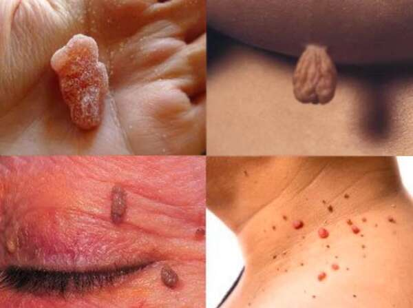
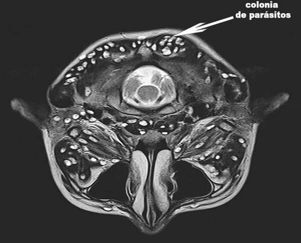

LAS VERRUGAS PUEDEN APARECER COMO RESULTADO DE LA PRESENCIA DE PARÁSITOS EN EL CUERPO
SI TIENE PAPILOMAS EN EL CUELLO, LAS AXILAS U OTRAS PARTES DEL CUERPO, ENTONCES LOS PARÁSITOS LO ESTÁN DEVORANDO DE ADENTRO HACIA AFUERA
Si en el cuerpo aparecen papilomas o verrugas, puede significar que una colonia de parásitos peligrosos ya se ha acomodado en los órganos internos y está devorando los tejidos.
Según los expertos, más de mil millones de personas padecen infecciones parasitarias. Una forma probada de diagnosticar esta infección es por la presencia de verrugas.

Responde a nuestras preguntas: Matias
Palacios.
Especialista en parasitología, investigador
científico.
Presenta un programa de televisión sobre salud. Es autor de dos
libros sobre enfermedades infecciosas y parasitarias.
Nota del editor: El Instituto de
Parasitología y Enfermedades Tropicales ha descubierto la
verdadera causa de las verrugas en el cuerpo humano: la
infestación por parásitos. Estudios recientes han demostrado que
los desechos de los parásitos son tóxicos y crean un ambiente
ideal en el estómago de las personas para el desarrollo de
bacterias. Es por esta razón que las personas infectadas con
parásitos pueden notar verrugas en su piel.
Hoy discutiremos este problema
con Matias Palacios.
Corresponsal: Matias, buenas tardes. Voy a
empezar por el punto principal, ¿es cierto que la mayor parte de
la población de Sudamérica está infestada de parásitos?
Matias: Así es. Desafortunadamente,
ocupamos uno de los primeros lugares en términos de niveles de
infección parasitaria. Esto se debe a las pésimas condiciones
ambientales, a la falta de concienciación de la población sobre
estas enfermedades y a la indiferencia de la propia gente ante el
problema.
Cada año, millones de personas sufren
enfermedades causadas por parásitos. Muchos casos acaban siendo
mortales. Pero de esto no se habla y casi nunca hay confirmación
oficial de este hecho. Hay muy pocas excepciones y, en general, se
trata de situaciones en las que es imposible ignorar la infección,
como cuando el corazón ha sido obstruido por parásitos. A nadie le
conviene afirmar que la tasa de infestación por parásitos es
bastante elevada. También las enfermedades causadas por parásitos
obligan a la gente a acudir a clínicas privadas para obtener
costosos remedios.
Corresponsal: Matias, ¿las verrugas
son realmente un signo de infección por parásitos?
Matias: Así es. Varios grupos de
investigación coinciden en que los residuos de los parásitos pueden
provocar la aparición de papilomas o verrugas en la piel de las
personas. Además, si notas verrugas en tu piel, es probable que los
parásitos ya se hayan instalado en tu cuerpo y estén poniendo huevos
activamente. Así que cualquier persona que tenga verrugas en la piel
está en riesgo.

Y permitidme que os recuerde que un enorme
porcentaje de las muertes, incluidas las llamadas causas naturales,
se deben a un factor: los parásitos nos están comiendo lentamente
desde dentro.
Corresponsal:
Entonces, ¿las verrugas de la piel pueden ser causadas por
parásitos como los gusanos?
¿Cómo pueden ser fatales?
Matias: En realidad, es un error
realmente grande pensar que los parásitos son solo lombrices.
Hay una gran cantidad de diferentes tipos de parásitos que
pueden vivir en diferentes órganos y causar una amplia variedad
de efectos. Además, los gusanos o, como también se les
llama, los helmintos, son bastante peligrosos. Literalmente
destruyen los intestinos, lo que hace que se pudran.
Y eso ya puede ser fatal.
Además de estos, hay miles de
parásitos que pueden vivir en el hígado, el cerebro, los
pulmones, la sangre y el estómago. ¡Y su presencia en los órganos
internos es extremadamente peligrosa!
Algunos de ellos inmediatamente comienzan a destruir agresivamente
el cuerpo humano. Otros parásitos viven ocultos hasta el
momento en que su número se vuelve tan grande que el cuerpo no
puede hacerles frente. Provocan una serie de complicaciones graves:
infarto de miocardio, cáncer y otras.
Al mismo tiempo, puedo decir con confianza
que casi todas las personas están infectadas con
parásitos. El problema es que la mayoría de las
infecciones por parásitos son muy difíciles de detectar. Y cuando
las consecuencias de la infestación por parásitos se hacen
evidentes, los especialistas tratan de deshacerse de ellas.
El único signo universal para diagnosticar la
presencia de parásitos en el cuerpo humano son las verrugas.
Corresponsal: ¿Puede dar algunos
ejemplos específicos de infestación de
parásitos?
Matias: Puedo darte miles de casos.
Pero, tal vez, me centraré en los que mejor muestran los
peligros de la infestación de parásitos.
1. Un caso con un final exitoso. De vez en
cuando la mujer se quejaba de dolor abdominal. El examen
mostró que todo su intestino estaba lleno de lombrices.
La degeneración de los tejidos ya había comenzado allí y la mujer
estaba al borde de la sepsis. Durante la operación, se extrajo parte
de su intestino, los parásitos fueron destruidos junto con el tejido
en descomposición.
2. Útero infectado por una colonia de
parásitos. Por desgracia, fue imposible deshacerse de ellos, ya que
los parásitos y sus larvas ya habían llenado el útero de esta
paciente y lo habían agrandado varias veces. En consecuencia, el
órgano tuvo que ser extirpado. La mujer fue rescatada. Sin embargo,
la intoxicación era tan grave que tuvo que someterse a varios meses
más de desintoxicación y a una medicación especial.

3. Equinococosis del corazón. La
enfermedad se descubrió demasiado tarde. El especialista pensó que
la mujer solo padecía una enfermedad coronaria y una angina de
pecho, pero la realidad era más brutal. Ninguna intervención, ni
siquiera una operación, ayudó. El trasplante de corazón no era una
opción ya que no había donante. Como resultado, ella no pudo ser
salvado.
Corresponsal: ¿Cómo podemos
saber si estamos infectados con parásitos?
Matias: Desafortunadamente, no hay
métodos que permitan diagnosticar con confianza si hay
parásitos en el organismo de una persona o no. Esto se debe en
parte al hecho de que hay muchas especies de parásitos
(más de 2, 000 especies conocidas) y en parte debido a que son
difíciles de detectar. Una prueba completa de parásitos es muy cara
y no está disponible en todas partes.
Los principales signos que indican la
posible presencia de parásitos en el organismo son:
- - verrugas,
- - mal aliento,
- - alergias (erupción cutánea, ojos llorosos y secreción nasal),
- - erupciones y enrojecimiento en la piel,
- - resfriados frecuentes, dolor de garganta, congestión nasal,
- - fatiga crónica (te cansas rápidamente, sin importar lo que hagas),
- - dolores de cabeza frecuentes,
- - estreñimiento o diarrea,
- - dolor muscular y articular,
- - nerviosismo, insomnio y trastorno del apetito,
- - círculos oscuros y bolsas debajo de los ojos.
Si al menos uno de estos signos está presente,
es muy probable que tengas parásitos en tu cuerpo. ¡Y deben
deshacerse de estos lo antes posible!
Corresponsal: ¿Cómo podemos
protegernos y deshacernos de los parásitos?
Matias: En cuanto a la disponibilidad
de remedios para combatir los parásitos, la situación es ahora
bastante problemática. Por supuesto, hay productos muy
especializados que limpian el cuerpo de gusanos. También existen
composiciones más o menos eficaces para combatir determinados tipos
de gusanos o parásitos que afectan al hígado. Sin
embargo, el principal problema es que solo interactúan con un
tipo específico de parásito. Pero, cada persona puede ser portadora
de al menos 7-8 tipos de parásitos. Observando los datos medios,
vemos que cada persona infectada puede ser un portador de 11 a 14
especies de parásitos.
Pero hoy en día existe una solución para
deshacerse de los parásitos. Es una cápsula antiparasitaria llamada
. Los
estudios han demostrado resultados notables. Hoy, el producto está a
disposición de todos los habitantes de nuestro Estado.

Contribuye a la destrucción de fuentes de todo tipo de infecciones parasitarias
Corresponsal: ¿Qué hace que
sea tan especial?
¿Cuál es la diferencia entre este producto y otros remedios
antiparasitarios?
Matias: Como he dicho, este es casi la
única composición antiparasitaria eficaz que conozco.
Ayuda a eliminar los parásitos. Por eso es tan popular en muchos
países desarrollados. En comparación con otros productos
antiparasitarios, actúa directamente sobre una amplia gama de
parásitos que pueden infectar todo el organismo. Al considerar los
problemas de diagnóstico, cabe destacar que este producto ayuda a
limpiar todo el cuerpo. Mencioné anteriormente que es casi imposible
determinar qué tipo de parásito ha infectado el cuerpo. ayuda a destruir y eliminar casi
todos los parásitos que viven en cualquier órgano interno, desde
el cerebro y el corazón hasta el hígado y los intestinos. No hay
muchas fórmulas que puedan presumir de tal acción.
Además, no es un producto químico y se compone
en su mayoría de ingredientes naturales, por lo que casi no hay
riesgo de reacciones alérgicas, alteración de la flora bacteriana
intestinal u otros problemas que pueden surgir al utilizar productos
clásicos. Pero también conviene recordar que el efecto depende de
cada organismo.
¡IMPORTANTE! El fabricante ha hecho
una promoción especial en la que las cápsulas pueden adquirirse con
un descuento de hasta el 50%.
Es una oferta limitada.
Es una oferta limitada.
1. La eficacia de
se calculó
mediante métodos estándar (relación entre el número de personas
a las que ayudó el producto y el número total de personas del
grupo de 100 voluntarios que participaron en el ensayo de ):
- - deshacerse de los parásitos y sus huevos: 99%,
- - normalización de la condición y función del páncreas: 80%,
- - eliminación de la dermatitis alérgica: 90%,
- - deshacerse de la gastritis, úlceras y diarrea: 90%,
- - eliminación de la anemia: 99%,
- - eliminación de verrugas y crecimientos: 99%.
2. No se encontraron efectos secundarios,
incluidas reacciones alérgicas.
3. está
reconocido como uno de los productos más eficaces en la lucha
contra los parásitos.
Corresponsal: creo que a nuestros lectores
les gustaría saber dónde comprar
con un descuento.
Matias: ¡ no se encuentra en
nuestras estanterías!
Por lo tanto, todos aquellos que deseen obtener
con un descuento de hasta el 50%
pueden
participar en nuestro sorteo.
A continuación, nuestros expertos se pondrán en contacto con ellos
para elaborar un plan personalizado de lucha contra los parásitos
con . No importa dónde vivas,
podemos enviar el producto a cualquier parte del país.
Hemos lanzado una campaña publicitaria a gran escala en todos los
medios de comunicación para llamar la atención de las personas sobre
este producto y prometimos sortear 200 envases de
hasta el
de descuento.
Todos pueden participar en este sorteo y llevarse el premio
principal: ¡un 50% de descuento!
Esta campaña de promoción tiene como objetivo que la gente sepa de
este producto.
Corresponsal: Matias, ¿hay algo
más que quieras decir a nuestros lectores antes de que
terminemos esta entrevista?
Matias: Lo único que me gustaría decir
es que cuiden la salud. Puede que ni siquiera seas consciente de
ello, pero la posibilidad de que haya parásitos viviendo en tu
interior es muy alta. Los
parásitos pueden estar
en cualquier lugar, en la sangre, los intestinos, los pulmones, el
corazón, el cerebro. Los parásitos literalmente te devoran
desde adentro, envenenando tu cuerpo. El resultado es una serie de
problemas que acortan la esperanza de vida en 15-25 años. Ni
siquiera mencionaré el paro cardíaco repentino, que a veces se
produce como resultado de que el cuerpo esté infectado por los
parásitos. No esperes a que sea demasiado tarde.
¡Importante! Ahora es el mejor momento para
empezar a combatir los parásitos. El efecto es cada vez mayor.
Las mejoras en la salud
ocurren un 47% más rápido que en otros momentos del
año.
Comentarios